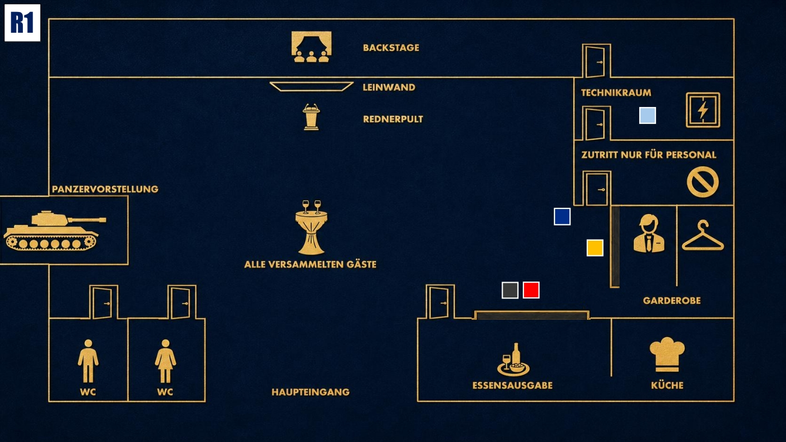

Beobachten & Testen
Lerne die anderen kennen. Finde heraus, wer etwas verbirgt, ohne selbst zu viel preiszugeben.

Das Ziel der ersten Runde
Finde heraus, wie stark Jake noch von seiner Vergangenheit verfolgt wird. Setze ihn kontrolliert unter Druck und beobachte gleichzeitig, ob Zoe beginnt, Zusammenhänge rund um den Blackout zu erkennen.
Deine Geheimnisse
1. Der Schattenmann: Du stehst auf keiner offiziellen Gästeliste. Dein Erscheinen wurde von Diana und Michael arrangiert, damit du im Notfall eingreifen kannst.
2. Die Erpressung: Du warst derjenige, der Eric Dumont anonym bedroht und bezahlt hat, um den Blackout zu erzwingen.
Deine Mission
1. Jake einschüchtern: Fixiere Jake immer wieder mit Blicken und lass ihn spüren, dass du mehr über ihn weißt, als du offen sagst. Verrate dich dabei nicht und gib dich nach außen als jemand, der dem Militär grundsätzlich kritisch gegenübersteht.
2. Zoe beobachten: Achte darauf, ob Zoe bereits Beweise sammelt, gezielte Fragen stellt oder noch im Dunkeln tappt. Sie ist gefährlich, wenn sie beginnt, die richtigen Verbindungen zu erkennen.
Deine Erinnerung an 18:00 Uhr

Zum Vergrößern tippen
Du hältst dich nahe dem Mitarbeitereingang auf und beobachtest die Gäste. Jake und Zoe stehen an der Essensausgabe, Michael an der Garderobe.
Mögliche Fragen
An Jake: „Du hast einen weiten Weg hinter dir, Jake. Glaubst du wirklich, man kann seine Vergangenheit einfach an einer Grenze zurücklassen?“
An Zoe: „Als Beamtin siehst du sicher viele Menschen, die glauben, sie wären unschuldig. Was sagt dein Instinkt über den heutigen Abend?“